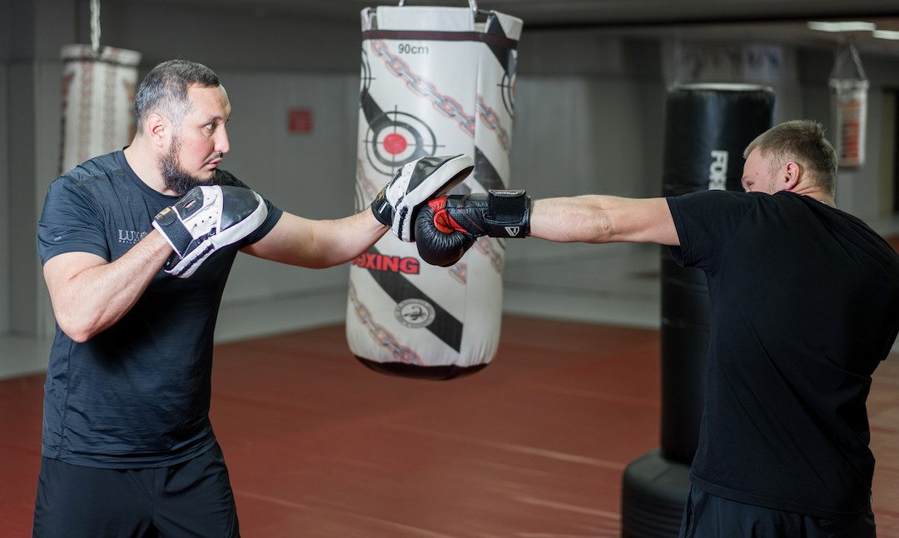
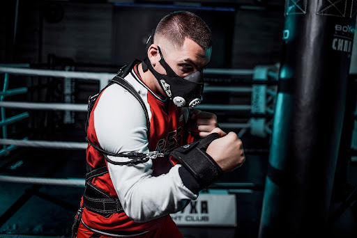

Бокс – одне із найдавніших видів єдиноборств. Він є досить жорстким, травмонебезпечним, але виховує величезну силу духу та волю до перемоги у людини. Він є олімпійським видом спорту, а його історія налічує багато тисяч років. Історія почалася ще в Стародавньому Єгипті і з часом набувала різних форм. Сучасний варіант відомий майже кожному любителю бойових мистецтв – ринг, два атлети, суддя, глядачі та тяжке протистояння спортсменів до останнього гонгу. Саме цей спорт приковує увагу мільйони дорослих фанатів по всьому світу, які радіють та переживають за своїх кумирів. Тому майже кожен хлопець мріє вміти битися як Аллі та виступати на світових майданчиках, радуючи своїх вірних фанатів.
Тому у багатьох виникають питання: "Як почати займатися боксом?" і «Чи варто займатися ним взагалі?».
Кожен має власні причини, завдяки яким він починає займатися тим чи іншим спортом. Ця стаття допоможе зрозуміти потенційному новачкові – «чи є необхідність розпочати тренування з
боксу?».
Як розпочати займатися боксом?
Спочатку визначимо плюси (переваги тренувань), чи варто займатися цим дорослому: Заняття даною дисципліною дозволяє виробити навички захисту. Адже самооборона вкрай важлива у наш час і хлопцю треба вміти постояти за себе та за ближнього у різних ситуаціях. Розвивається фізична сила та психічний стан, людина стає більш впевненою в собі та сильною. Головне правила боксерів – «агресію залишати в залі», тому боксери більш стійкі до стресів у повсякденному житті.
Основи боксу для початківців насамперед починається з вибору групи – індивідуальні чи групові тренування. Індивідуальні заняття дозволяють більш точно наголошувати на проблемних моментах, працювати можна з тренером, відпрацьовуючи силові або швидкісні елементи. У цьому тренер допоможе підібрати індивідуальний план тренувань. Заняття в групах дають змогу спільно відпрацьовувати елементи – спаринги або роботу на лапах. Групові тренування дуже корисні для новачка, тому що людина, бачачи приклади сильних боксерів, з кожним тренуванням посилює відпрацювання елементів, відточуючи свою майстерність і доводячи його на рингу разом зі своїми партнерами. Крім того, командні заняття до всього іншого роблять процес занять веселішим і цікавішим.
Основи боксу для початківців складаються з важливих елементів
Боксерська стійка
Бокс для новачків пов'язаний із поняттям стійки – адже стійка має ключове значення. Насамперед, прийшовши на тренування до школи боксу, починаючийого дорослого боксера почнуть навчати руху у захисті чи атаці у стійці. Вона допомагає захистити корпус і голову, а руки знаходяться в позиції, що дозволяє моментально завдати контратаку удару по противнику. Поступово, крок за кроком, вона розвиватиметься, а рухи будуть різкішими. Класична боксерська стійка – стояти потрібно на напівзігнутих ногах, носок передньої ноги та п'яткова частина задньої ноги повинні тяжіти до центральної частини, щоб утримувати потрібну рівновагу. Підборіддя має «дивитися вниз», а голова повинна бути за рукавичками.
Робота на груші
Робота на снаряді – не тільки основа боксу для початківця, а й головне заняття бійця протягом усіх тренувань. Зазвичай на груші працюють по раундах, відпрацьовуючи у кожному раунді різноманітні удари. Груші також відрізняються щільністю і в міру посилення ударної потужності можна переходити до важких снарядів. Саме цей тип тренувань дозволяє покращити роботу рук та прокачує витривалість. Для новачка груша стане «вірним другом» на багато років.
Робота ніг
Багато хто помилково думає, що в цій дисципліні спорту основний елемент – руки. Ноги мають важливе значення, тому що вся сила удару починає йти в руки саме з ніг. Техніка розвороту на нозі допомагає у захисті та атаці. Вона дозволяє уникнути потенційного зустрічного удару і за допомогою такого розвороту можна зробити крок у бік найкращої позиції, з якої легко завдати ефективного удару.
Силова робота
Вона дуже важлива для м'язової маси та фізичних показників боксера. Працювати новачкові доведеться з різними елементами – штанги, гантелі, бруси, молоти – робота на покращення фізичної маси, для покращення бігових показників та витривалості використовують бігові доріжки, драбинки та регулярні пробіжки у парках та на стадіонах.
Бокс для дорослих новачків слід оцінити з позиції користі для здоров'я. Фахівці – лікарі стверджують, що бокс позитивно позначається на роботі серцево-судинної та дихальної системи. Якщо новачок ставить за мету скинути вагу, то це буде непоганою ідеєю, оскільки за одне повноцінне тренування можна скинути чимало калорій – близько 1500. Також психологи стверджують, що стрес, який накопичується під час роботи, можна легко розвантажити на груші або спарингу. Дієтологи радять новачкам займатися боєм з тінню, тому що саме така вправа ідеально підходить для скидання ваги. Тут головне тримати середній темп, злегка напружуючи м'язи, у своїй випаровування поту ставатиме сильніше, спалюючи жир. Також важливою є дієта чоловіка. По-перше, дієта будується виходячи з індивідуальності кожного організму та цілей, які ставить перед собою кожен атлет. Стандартна дієта – білийова, спрямована на нарощування м'язової маси та схуднення. У її основі лежить споживання білків – яєць, протеїну тощо. В даному випадку потрібно радитися з тренером та зі своїм лікарем. Також сили та енергію можуть надати так звані складні вуглеводи – зерна (тверді сорти), боби та різні сорти каш.
Чи варто займатись боксом?
Однозначно важко відповісти на це питання, так як у кожного є свої смакичитання у тому чи іншому виді спорту, але прочитавши вище написане, звичайно, стане легше зробити свій вибір. Популярність, корисність даної категорії єдиноборств не можна не відзначити, вона може відкрити дорогу молодому даруванню досягти великих висот – підкорити світові та олімпійські вершини або просто зробити міцною, сильною та безстрашною людиною. Бокс вчить не тільки битися і захищатися, а й виховує в людині позитивні якості, які допоможуть у повсякденному житті – повага до конкурентів, підтримка та переживання за своїх товаришів, уміння долати труднощі та досягати поставленої мети. В наш час вміння постояти за себе дуже важливо, тому що чоловік є захисником сім'ї, батьківщини, та й просто має дати відсіч у критичній ситуації. Хороший тренер і правильна школа боксу навчать усім базовим елементам цього виду єдиноборств, навчать залишати всю агресію в залі і в жодному разі не застосовувати свої навички без вагомих причин «на вулиці».
Завжди важко зробити якийсь новий крок, наприклад, віддати дитину на такий, як багатьом здається, небезпечний спорт. Але як нам показують багато історії — це справді великий спорт. Досить згадати чудові кар'єри Тайсона та Аллі. Адже саме їхні приклади змушують дітей у всьому світі слідувати своїй мрії і ставати хорошими атлетами, а якщо пощастить чудовими світовими зірками.
Дуже важливо вибрати правильне заняття, правильну мету і цей чудовий вид бойових мистецтв у цьому випадку – гарний варіант розвинути та виявити найкращі якості та здібності чоловіка.